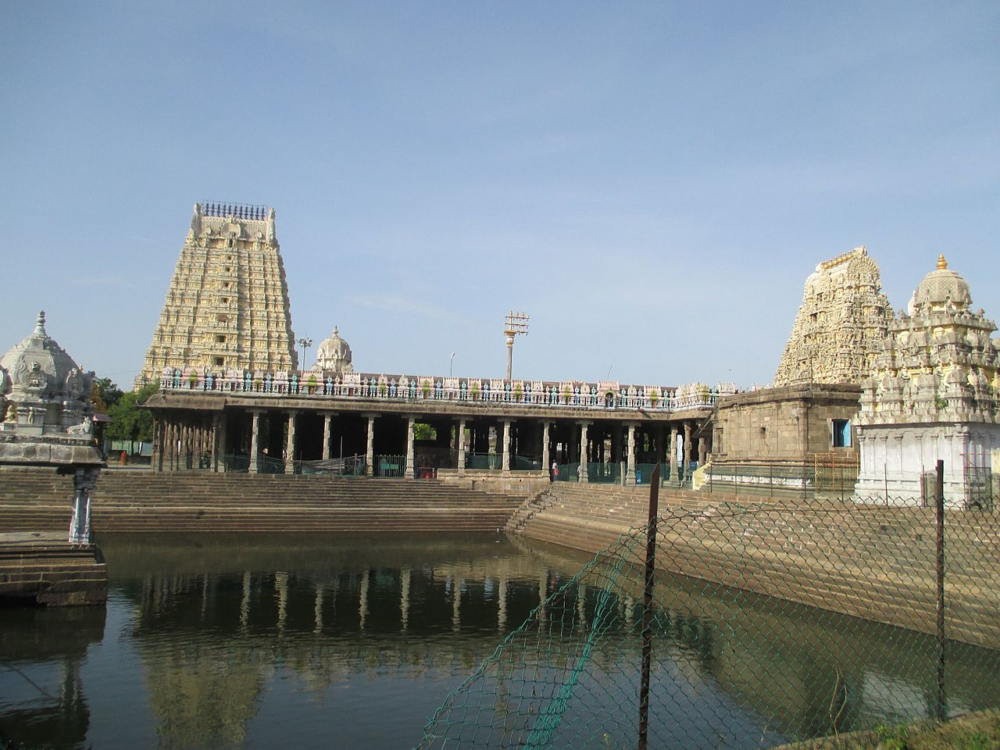

| Ekambareswarar temple is one of the five Hindu temples dedicated to Lord Shiva and is located in Kanchipuram in the southern state of Tamil Nadu. The five Shiva temples represent a primordial natural element – water, ether, fire, wind – with the Ekambareswarar temple representing earth. This vast temple is famous for its huge ‘Gopuram’ which dominates the skyline of the temple town of Kanchipuram. This town is among the seven most important pilgrimage centres in India and attracts numerous tourists. The temple gains further significance as it’s historically among the most ancient temples, with its existence dating back to around 600 AD. This sprawling temple covers an area of more than 40 acres and reaches a maximal height of 57 meters. The temple’s main entrance – the ‘Raja Gopuram’ is among the tallest in South India and is carved with graceful art forms and sculptures in various poses. It was built by Raja Krishna Deva Raya and the intricate designing of this gopuram can keep connoisseurs of art entranced for hours. |  |